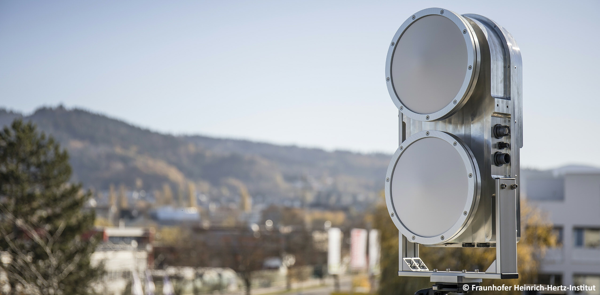
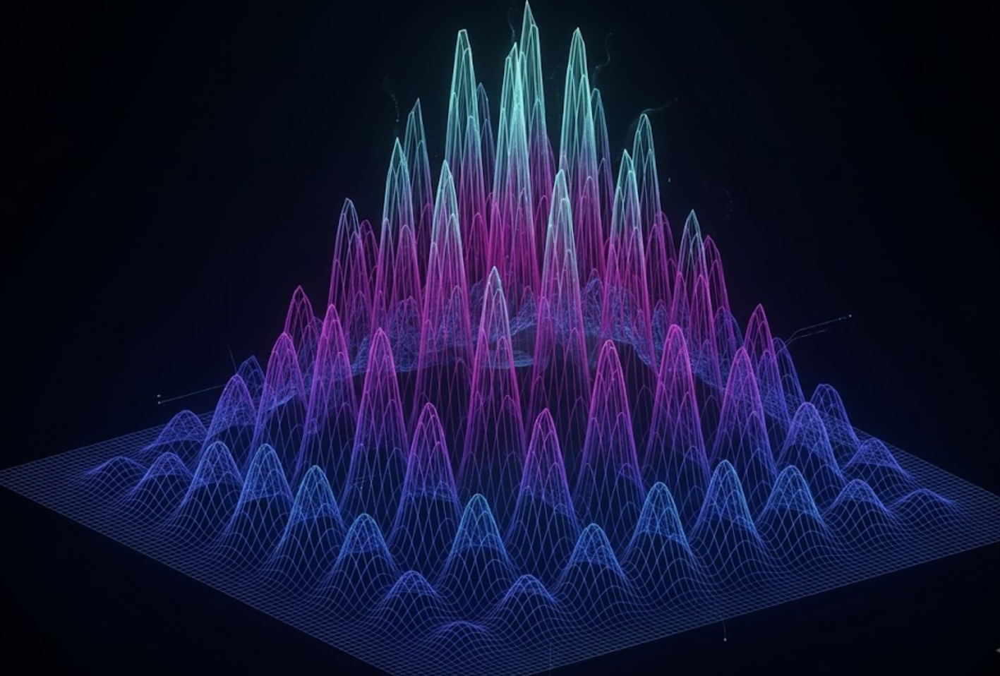

Affiliated with
Advancing 6G Photonic
Networks &
THz Wireless
01 — Latest News
Recent updates on publications, awards, and teaching.
Awarded the Best Student Paper Award at OECC 2026 for a record 221 Gb/s dual-polarization THz wireless transmission over 500 m in urban Berlin, a rate–distance product exceeding 100 Tb/s·m in the 300 GHz band.
View on LinkedIn →Paper accepted to IEEE Photonics Technology Letters (PTL): “Neural-Network Based Transceiver Nonlinearity Mitigation for Probabilistically Shaped Photonic THz Wireless Transmission.”
Started co-founding LUXONNIC as CEO, an early-stage venture at Fraunhofer HHI developing photonic neural transceivers for AI data centers, and submitted a funding proposal to the BMFTR xG-Incubator programme (StartUpConnect).
Started as Lecturer at HTW Berlin, teaching the B.Sc. programme in Information and Communication Technology.
Two papers published in the Journal of Lightwave Technology (JLT).
02 — Research
From experimental 300 GHz THz links to neuromorphic photonics. Building the physical layer of 6G.

Experimental 300 GHz (WR-3) transmission systems built on photonic upconversion, from PIN-photodiode transmitters to receiver-side DSP. Demonstrated throughputs beyond 109 Gbit/s, with a record 221 Gb/s dual-polarisation link over 500 m.

Rate-adaptive probabilistic shaping approaching the Shannon limit, integrated into converged fiber–THz backhaul architectures for 6G. The subject of my PhD dissertation at TU Berlin.
Optical signal processing on integrated photonic chips using neural networks: modulation format identification, signal correction, and feature extraction, entirely in the optical domain at sub-nanosecond latency.
03 — Venture
Co-Founder & CEO of an early-stage deep-tech venture, developed at Fraunhofer HHI, working to reinvent the optical transceiver for AI data centers.
“Becoming the secret sauce of next-gen transceivers.”
LUXONNIC is developing the LUXONNICore, a photonic integrated circuit that performs signal equalization directly in the optical domain using photonic neural networks, replacing the power-hungry DSP chips inside next-generation (LPO/CPO) transceivers.
04 — Publications
First-author papers highlighted. Google Scholar • IEEE Xplore
In-Ho Baek, J. Honecker, M. Bittiehn, R. Elschner, C. Schubert, R. Freund
In-Ho Baek, O. Stiewe, R. Elschner, M. Rösch, A. Tessmann, M. Nölle, L. Molle, C. Schubert, R. Freund
Best Student Paper Award -- OECC 2026
In-Ho Baek, O. Stiewe, J. Gläsel, S. Nellen, G. Schwanke, T. T. Tran, R. Elschner, C. Schubert, R. B. Kohlhaas, P. Runge, M. Schell, R. Freund
In-Ho Baek, O. Stiewe, J. Gläsel, M. F. Ulukan, A. Schindler, F. Ganzer, T. T. Tran
In-Ho Baek, O. Stiewe, S. Nellen, G. Schwanke, R. Elschner, C. Schubert
In-Ho Baek, F. Bart, R. Elschner, F. Meier, D. Hellmann, A. Maassen, C. Schubert
R. Elschner, F. Bart, F. Meier, O. Stiewe, IH Baek et al.
C. Schubert, R. Elschner, O. Stiewe, IH Baek et al.
C. Schmidt-Langhorst, J. Pfeiffer, R. Elschner, R. Emmerich, F. Chowanek, IH Baek, R. F. H. Fischer, C. Schubert